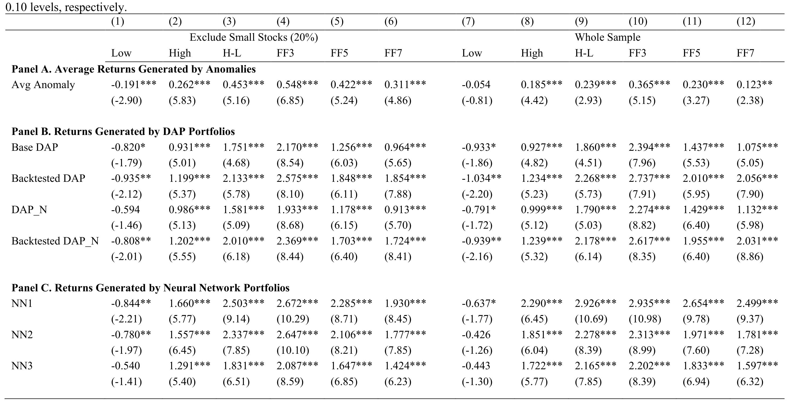
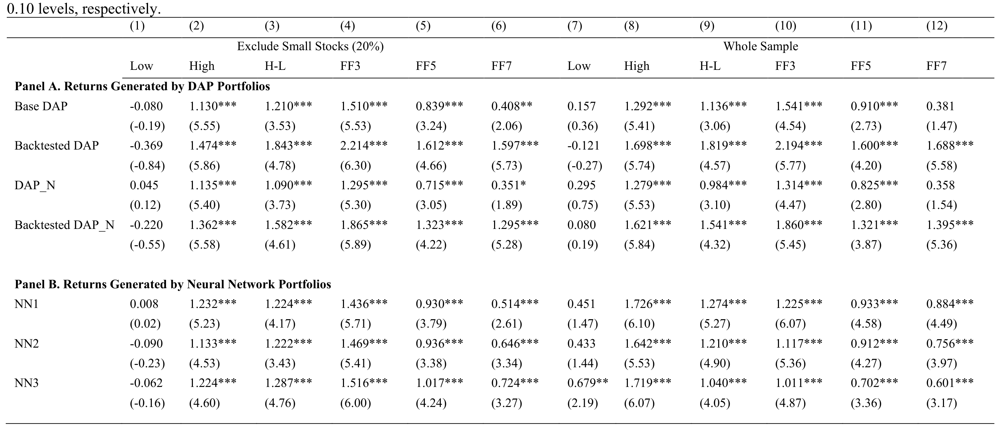
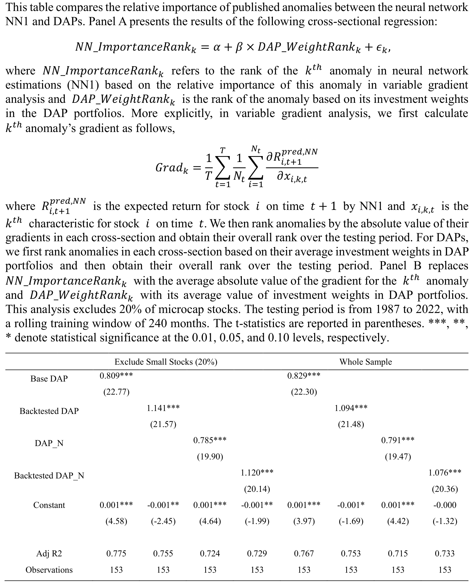
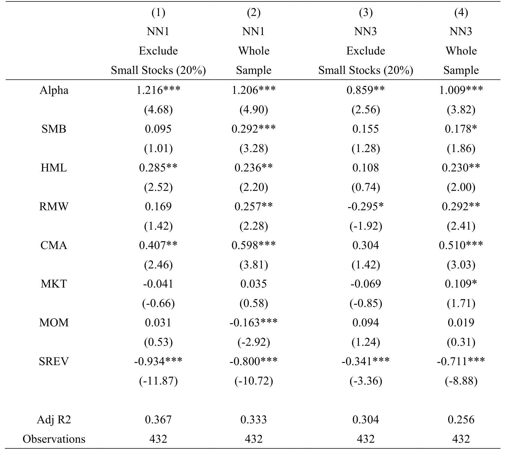
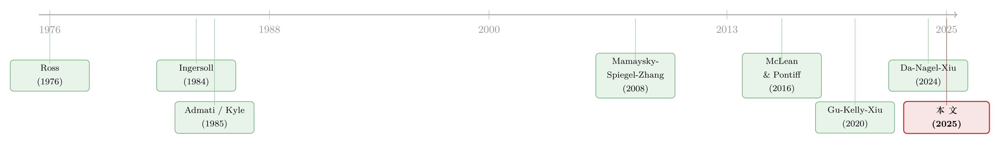

机器学习是不是在「重新发明」套利？——给神经网络的超额收益找一个经济学基准
本文读的是 Lu, Spiegel & Zhang (2025, SSRN)：神经网络用一堆异象做出的「惊人」收益，并不神秘——只要给它一个恰当的经济学基准，即一套把权重按条件 alpha 摆放、再用回测剔除假信号的「动态套利组合」(Dynamic Arbitrage Portfolio, DAP)，就能解释掉它绝大部分的超额表现。剔除微盘股、只允许使用「已发表」异象之后，一个透明的经济模型几乎吃光了神经网络的 alpha。更有意思的是：同一套经济学，反过来还能把神经网络的业绩翻倍。
1 引言：一个「太好了，反而可疑」的黑箱
先说一件让人不太舒服的事。
过去十年，机器学习在预测股票收益上交出了一份近乎奢侈的成绩单。Gu, Kelly, and Xiu (2020) 之后，一篇又一篇论文告诉我们：把上百个异象 (anomaly) 喂给一个前馈神经网络 (Feedforward Neural Network, NN)，它就能搭出年化夏普比率高得惊人的多空组合。问题是——这些收益从哪儿来？神经网络是个「黑箱」(black box)，它只会告诉你买什么、不告诉你为什么。于是一个很自然、却始终没人答好的问题摆在那里：如果机器学习真有这么神，为什么手握同样工具、还能随便用任何手段的真实基金经理，做出来的收益却平庸得多？是现有的经济学理论漏掉了资产收益里的某种根本机制，还是说——这台机器其实在做一件我们早就懂的事，只是我们一直没用对的尺子去量它？
Anthropic 的 CEO Dario Amodei 在 2025 年 4 月说过一句话，被作者放在了论文最前面：我们最好能赶在模型变得「压倒性强大」之前，先搞懂它内部到底在干什么——也就是「可解释性」(interpretability)。这篇论文做的，正是金融版的可解释性：它想在经济学原理和金融 AI 之间，修一条「双向」的路。一个方向是用经济学去解释 AI；另一个方向，是用经济学去改进 AI。
把黑箱拆成玻璃箱，这股潮流不止这一篇。关于在公司债市场上做同样事情的努力，可参见《把机器学习的黑箱拆成玻璃箱：公司债收益率能被「看懂」地预测吗？》。
本文要反复讲透的，其实只有一句话：神经网络的「超额」收益，很大程度上是因为我们从来没有给它一个合适的经济学基准。 而这篇论文造出来的那个基准，简单到几乎让人意外。
2 一个三异象的世界：DAP 的全部直觉
要理解作者的基准，不必先碰任何公式。论文自己先讲了一个玩具世界，我们就从这里进。
设想世上只有三个异象，叫 A、B、C；只有两种「状态」(state)，叫 X 和 Y。异象 A 在两种状态下都稳定地产生每年 3% 的 alpha；异象 B 在状态 X 下产生 6%、在 Y 下产生 0%；异象 C 正好反过来，在 Y 下 6%、在 X 下 0%。状态本身是一个马尔可夫过程，平均而言下一期与本期相同，但长期看 X 和 Y 各占一半。
传统的做法是什么？是持有一个「分散化」的异象组合——等权或市值加权地同时押 A、B、C。在这个例子里，它的期望收益是 3%。但请注意：如果我们有理由相信投资期处在状态 X，还把钱平摊给 C，岂不是把三分之一的资金扔进了一个当期注定零回报的口袋？
于是直觉就来了：投资权重应该正比于「在预期状态下能产生的 alpha」。在状态 X 下，A 贡献 3%、B 贡献 6%、C 贡献 0%，按比例就是把 1/3 投给 A、2/3 投给 B、C 一分不给——期望收益一下子从 3% 跳到 5%。
这就是动态套利组合 (Dynamic Arbitrage Portfolio, DAP) 的全部直觉：不要平均地对待异象，把更多的钱押在历史表现更好的那个上。 它还能自然地推广到动态情形——用上一期的状态和马尔可夫转移概率，去推断本期该押谁。
但这个故事里藏着一个要命的细节，它后面会变成全文的枢纽：如果状态已经悄悄从 X 切到了 Y，你却还死押着 B，那就要血亏。一个动态策略的成败，几乎全系于它能不能尽快识别出「刚刚失灵」的异象。
3 DAP 框架：把「按 alpha 下注」写成公式
接着，一个自然的问题是：上面这个直觉，能不能落到一个严谨、可估计、且有理论根基的公式上？能。
作者把异象看成一批能持续产生「异质条件 alpha」的资产。设第 k 个异象策略（即第 k 个公司特征做出的高减低多空组合，k ∈ [1,K]）在第 t 期的收益服从一个条件 CAPM：
$$ y_{kt} = \alpha_{kt} + \beta_{kt} \times X_t + \epsilon_{kt}, \qquad \epsilon_{kt} \sim N(0, \sigma_k^2) $$
这里 y_{kt} 是异象 k 的（超额）收益，α_{kt} 是它的条件 alpha，X_t 是一个影响所有资产的共同因子（比如市场收益），β_{kt} 是市场暴露，ε_{kt} 是 i.i.d. 噪声。一个异象的信息量，全在它那个「随时间持续、却会被经济变化冲击」的条件风险溢价里。
基于 Admati (1985)、Ingersoll (1984) 与 Da, Nagel, and Xiu (2024) 的多资产套利框架，理性投资者的最优交易规则，是把资金按每个异象的预期条件 alpha 成比例地投出去。于是异象 k 的投资权重可以写成 c_t α_{k,t-1}——其中 α_{k,t-1} 是建仓日 t-1 能观测到的 alpha，c_t 是让权重加总为 1 的归一化常数。把异象层面的收益一路拆回到个股层面，就得到了 DAP 组合在第 t 期的收益，也就是论文的方程 (1)：
最右边那一步是关键的「翻译」：它把一个「在异象层面下注」的组合，重写成了一个「在个股层面下注」的组合，而每只股票 i 的权重，恰好是它在各个异象里的暴露 w_{i∈k,t} 按条件 alpha 加权的平均。经济上，你可以把它读成一只股票的「alpha 加权特征暴露」。
这一步之所以重要，是因为它让 DAP 和神经网络变得「可比」——两者最终都是在给个股分配权重，那我们就能把它们的个股权重、乃至异象排序，并排放在一起较劲了。
4 回测即 ReLU：非线性与「快速止损」从哪里来
然后，真正关键的一步出现了。
回到方程 (1)：如果某个异象的条件 alpha 持续为正，y_{kt} 就是 α_{k,t-1} 的线性函数，而组合收益 y_{Pt} = Σ_k c_t α_{k,t-1} y_{kt} 就成了 alpha 的二次型 (quadratic)。平方意味着什么？意味着小 alpha 几乎无足轻重，而大 alpha 的影响被极度放大。好处是收益弹性十足，坏处是——一旦某个被高估的、其实根本不该为正的 alpha 混进了尾部，它会以平方的力度反噬你的组合。这正是第 2 节那个「死押失灵异象」噩梦的数学版本。
那么怎么快速把这些假阳性 (false positive) 信号踢出去？作者采用了 Mamaysky, Spiegel, and Zhang (2007, 2008) 的回测 (backtesting) 规则，它简单得近乎粗暴：如果一个异象的 alpha 预测值，与它最近一期的实际收益符号相反，就把它的权重直接设为零。 直觉是，预测说该涨、现实却在跌，那这个信号八成已经失灵，先停掉再说。这本质上是在用「因子动量」(factor momentum, 见 Lewellen 2002; Ehsani and Linnainmaa 2022; Arnott et al. 2022) 来过滤掉假阳性 alpha。别小看它——在共同基金文献里，这类过滤规则是预测组合未来表现最稳健的指标之一 (Jones and Mo, 2021)。
而最妙的是它的数学身份：「符号一致才保留、否则归零」，在数学上恰恰就是机器学习里无处不在的 ReLU 激活函数。 一个经济学家出于「快速止损」直觉设计的规则，和深度学习里最常用的非线性单元，居然是同一个东西。论文由此构造了四个 DAP：Base DAP 与 Backtested DAP（用不用回测），以及把 alpha 再除以收益标准差（即用「信息比率」当信号）的 DAP_N 与 Backtested DAP_N。后面的主角，是那个回测 + 信息比率的 Backtested DAP_N。
5 数据与识别：怎样才算「公平地」考神经网络
接着是数据。作者把 DAP 和 NN 喂给同一套 153 个美股异象（公司特征），样本期为 1987 年 1 月到 2022 年 12 月，采用 240 个月的滚动窗口估计、每月按预测排成十分位 (decile)。
这里有两个看似技术、实则致命的取舍，构成了本文真正的「识别策略」。
第一，微盘股 (microcap)。 主样本剔除了市值最小的 20% 股票。原因在已有文献里很硬：这些股票会给机器学习算法带来已知的偏误 (Avramov, Cheng, and Metzker 2023; Cong et al. 2021)——交易成本高、流动性差，纸面上的高收益现实中根本拿不到。论文也专门跑了「含微盘」的版本作对照，目的就是把机器学习收益的来源「显影」出来。
第二，也是更微妙的一点——异象的「时机」(anomaly timing)：一个模型，到底从什么时候起才被允许使用某个异象？ 现有的 NN 测试通常剔除微盘，却允许模型在某个异象被学术界发表之前就拿来选股。这在现实中几乎不可能做到：要在一个异象发表前就用它，你得自己独立发现它——对一两个异象或许还行，对 153 个异象则纯属幻想。所以一个更现实的考法，是只允许模型使用已经发表的异象。这个约束同时堵死了「前视偏误」(look-ahead bias)，而且无论异象发表后收益下降是因为学术数据挖掘 (data mining) 还是因为市场把它交易掉了，都成立。
把这两点连起来看，本文的「识别」其实是一句反问：当我们禁止神经网络去碰它现实中根本碰不到的东西（微盘股 + 未发表异象）之后，它还剩下多少「超额」？答案，是本文的核心。
6 主要结果：黑箱被一步步拧开
于是反转开始。
第一步，诊断。 不含微盘时，在七因子 (FF7) 之上再加进 Backtested DAP_N 这一个因子，单隐层神经网络 NN1 的 alpha 就从 1.930 掉到 1.164——近 40% 的降幅。而一旦放微盘股进来，降幅只剩 26%。这个落差本身就说明：NN1 一旦被允许选微盘，就会重度依赖它们；而 Backtested DAP_N 虽然也用微盘，用得却克制得多。

Table 1: Out-of-sample Performance Delivered by DAP Portfolios (with 240-month Rolling Windows)
第二步，未发表异象。 作者用了两条互补的路。其一，把「未发表/已发表异象之比」当成一个额外的解释因子加进去：当 NN1 在全部异象里挑选（剔除微盘）时，单单这个「未发表比率」就把 alpha 砍掉了 59%；再加上 Backtested DAP_N，又砍掉 62%，alpha 至此在统计上不再显著。其二，更直接——干脆把 NN1 限制成只能用「已发表」异象。在这个约束下（剔除微盘），七因子 alpha 从 1.930 暴跌到 0.514，降幅 73%；再加进 Backtested DAP_N，进一步降到 0.241（又降 53%），与零已无法区分。而且，哪怕把训练窗口在 60 到 240 个月之间反复变换，Backtested DAP_N 也始终能吸收掉 NN1 alpha 的显著性。

Table 4: Out-of-sample Performance Delivered by DAP Portfolios (with 240-month Rolling Windows Only Published Anomalies)
到这一步，黑箱基本被拧开了：NN1 的收益，主要来自两处——微盘股，和未发表异象；它通过其他途径赚到的那部分，则呈现出与 Backtested DAP_N 高度相似的组合性质。 换句话说，扣掉那些现实中拿不到的东西之后，神经网络剩下的「本事」，一个透明的经济模型几乎全能复制。
7 横截面：连「该重视谁」都想到一块去了
但时间序列上的「解释力」可能只是巧合——两个收益相近的组合，未必真在做同一件事。所以作者又补了一刀，从横截面 (cross section) 验证：两个模型，是不是连「该重视哪些异象」都排得一样？
在神经网络里，某个异象的「平均梯度」(average gradient) 衡量了它在模型中的重要性 (Sadhwani et al. 2020; Horel and Giesecke 2020)；在 DAP 里，对应的就是平均投资权重。把 NN1 估计出的梯度（梯度排名）对 Backtested DAP_N 的权重排名做回归，系数高达 1.12（用排名时为 0.837），单变量 R² 达到 0.729（0.701）。两个出身完全不同的模型，对「哪些已发表异象更重要」的判断，竟然如此一致。而且这种一致不止停在异象层面——既然两者都靠异象给个股分配权重，它们落到个股上的平均权重也高度对齐。

Table 6: Explaining the Importance of Published Anomalies in Neural Networks
到这里，三条经济机制就立住了：其一，神经网络是通过一个与 DAP 相似的非线性策略来赚 alpha 的；其二，它相当一部分业绩来自未发表异象——这就逼出一个很实际的拷问：当我们检验一个机器学习模型时，到底该不该让它使用那些现实中根本无从知晓的异象？其三，把微盘放进来时，神经网络极易被微盘的虚假收益带偏。后一条与已有研究一致；前两条则是新贡献。它们合起来指向一个略带反讽的结论：机器学习之所以显得「超凡」，很可能只是因为我们一直缺一个合适的经济学基准。 神经网络无非是为了把交易收益最大化，自己「重新发现」了一套 DAP 式的最优策略，并用上了它的核心原则——给历史表现更好的信号更大的权重。
把更多权重押在历史更优的信号上、再压缩掉噪声维度，这股思路与《压缩横截面：因子动物园的尽头，不是更少的因子，而是更聪明的收缩》，以及《把「排序」种成一棵树：P-Tree 如何长出有效前沿》，是同一条河里的水。
8 反过来：经济学不止能解释 AI，还能改进 AI
如果故事到此为止，那它只是一篇优雅的「可解释性」论文。但作者多走了一步，把那条「双向路」的另一头也走通了。
机器学习严重依赖历史数据，因而格外怕「数据分布漂移」(data distributional shift)——未来与历史的分布不一致 (Cohen, Snow, and Szpruch 2023)。而第 4 节那个「回测」规则，天生就是来对付失灵信号的。那能不能直接把它焊到机器学习的输入端上？
作者就这么干了：保持神经网络的结构和超参数完全不变，只是在喂数据前，把那些被回测判为假阳性的异象取值直接设为零。结果——用已发表异象、剔除微盘的设定下，回测增强后的 NN1 拿到了 1.206% 的月度 alpha，而原始模型只有 0.514%。业绩翻了一倍还多。 不止如此，Online Appendix 里还显示 Backtested DAP_N 的信息比率 (information ratio) 达到 1.368，几乎是 NN1（0.705）的两倍；最大回撤 (maximum drawdown) 也从 NN1 的 -57.3% 收窄到 -35.3%。

Table 8: Backtest-enhanced Neural Network Performance (published anomalies)
一个源自基金经理「快速止损」直觉、又恰好等价于 ReLU 的简单规则，就这样既解释了机器学习、又改进了机器学习。这大概是全文最漂亮的闭环。
9 文献脉络
把这条线索捋一捋，会发现本文其实站在三股潮流的交汇处。
最上游，是套利定价理论 (Arbitrage Pricing Theory, APT)：Ross (1976) 奠基，Huberman (1982)、Chamberlain and Rothschild (1983)、Ingersoll (1984) 接力，给出了「按 alpha 成比例下注」这个最优规则的雏形；Admati (1985) 与 Kyle (1985) 则从信息交易的角度，把这套权重摆放的逻辑讲透。本文的 DAP，正是这条线的当代化身。

中游，是异象与发表偏误 (publication bias) 这一支：McLean and Pontiff (2016)、Harvey, Liu, and Zhu (2016)、Hou, Xue, and Zhang (2020)、Jensen, Kelly, and Pedersen (2023) 反复追问——异象到底是错误定价、数据挖掘，还是真实风险补偿？Cochrane (2011) 那句著名的「多维挑战」就是这条线的注脚。本文借异象当试验台，顺手照亮了这些老问题：发表显著影响了机器学习的收益，这与「事后被交易掉 + 错误定价 + 数据挖掘」的某种组合相吻合。
下游，是机器学习资产定价：Gu, Kelly, and Xiu (2020) 把神经网络推上舞台，随后一批人开始拆它的黑箱——Didisheim, Ke, Kelly, and Malamud (2023)、Kelly, Malamud, and Zhou (2024) 研究「超参数化」的好处，Shen and Xiu (2025) 研究处理弱信号的能力，Li, Rossi, Yan, and Zheng (2025) 则发现把因子随机排列后机器学习的表现大幅减弱，从根上质疑了它「理解复杂信号结构」的能力。与本文最近的，是 Da, Nagel, and Xiu (2024)：他们研究面对一堆弱信号时套利者的极限，证明机器学习能逼近最优夏普。本文恰恰把问题倒过来——研究一堆强信号的情形，从而能更干净地回答「黑箱在多大程度上只是在模仿一个经济直觉模型」。
10 评论与延伸（Q&A + 研究方向）
(a) 几个可能的疑问
Q：DAP 和神经网络到底是不是一回事？区别在哪？
不是同一个东西，但「家族相似」。DAP 是一个白盒：权重 = 条件 alpha（或信息比率）× 回测开关，每一步都有经济含义。神经网络是黑盒，结构上能拟合任意非线性。本文的论点不是「它们相等」，而是「神经网络扣掉微盘和未发表异象后剩下的可实现 alpha，性质上与 DAP 几乎重合」——时间序列上被吸收、横截面上排序一致（
R² = 0.729）。
Q：「只允许用已发表异象」这个约束，是不是人为压低了神经网络？
这正是本文最该被质疑、也最值得辩护的地方。作者的理由是「可实现性」：一个真实基金没法在异象发表前就系统性地用上 153 个里的大多数。所以这不是在「削弱」NN，而是把它放回一个现实可执行的基准里考。当然，反对者可以说，发表后收益下降未必等于「之前不可用」，而可能是市场把它交易掉了——但无论哪种解释，禁止前视都更稳妥。
Q：剔除最小的 20%，会不会太随意？
阈值确实是个判断。但方向是稳健的：放微盘进来，DAP 对 NN 的解释力从 40% 掉到 26%，说明 NN 的「额外」收益里很大一块来自微盘；而微盘收益在现实中因交易成本难以兑现，这与 Avramov, Cheng, and Metzker (2023)、Cong et al. (2021) 一致。真正的检验是结论对阈值的敏感性，而非阈值本身。
Q：回测凭什么等于 ReLU？这个类比会不会是过度包装？
不是包装，是恒等。回测规则「符号一致则保留 alpha、否则置零」，写出来就是
max(0, ·)形式的门控，这正是 ReLU。重点不在名字好听，而在于：它给了「机器学习为什么需要非线性」一个经济解释——非线性的作用之一，就是快速剔除失灵（假阳性）的信号。
Q：既然 DAP 这么好，还要神经网络做什么？
两个理由。其一，DAP 是基准，不是替代品——它的价值在于「解释」，让我们知道 NN 的收益有多少是经济原理、多少是微盘和前视。其二，第 8 节恰恰说明二者互补：把回测焊进 NN 的输入端，月度 alpha 从
0.514%翻到1.206%。经济学和机器学习不是零和。
Q：这是不是在说机器学习在资产定价里「没用」？
恰恰相反。本文没有否定机器学习，而是给了它一把合适的尺子。结论是「机器学习的收益可被经济原理解释，而经济原理又能改进机器学习」——这让 AI 更可信、更可用，而不是更廉价。
(b) 几个可能的研究问题与提案
1. 把 DAP + 回测搬到公司债市场。 【经济故事】公司债的「异象」（动量、carry、流动性、违约距离等）数量远少于股票，但分布漂移可能更剧烈——信用周期一转，半数信号瞬间失灵，正是回测最该发威的场景。能否用 DAP 复制信用市场里机器学习的收益？ 【可行性】中。数据可用（TRACE + 债券特征），识别上把本文框架平移即可；难点是公司债流动性差、月度收益噪声大，alpha 估计误差会被平方放大。
2. 把「外资持有比例」当作 regime 变量，去做异象时机。 【经济故事】本文的状态 X/Y 是抽象的。一个具体的候选状态，是外资持有人 (foreign ownership) 的进退——外资大举流入/流出，往往伴随某些异象（价值、流动性）溢价的切换。能否用外资持仓的变化来预测哪些异象「即将失灵」？ 【可行性】中。需要持仓层面数据（如 FactSet/13F 的外资标识）。识别可用外资被动流（指数再平衡导致的机械买卖）作为外生冲击，规避内生性。
3. 流动性作为「快速止损」的触发器。 【经济故事】回测用「最近一期符号相反」当失灵信号，略显粗糙。一个更有经济含义的触发器，是异象多空组合的流动性骤变——流动性枯竭时，套利失灵的概率上升（这与《流动性的方向感：异象多空组合，其实并不「流动性中性」》的发现相通）。把流动性指标并入门控函数，能否提升 DAP/NN？ 【可行性】高。所需的流动性度量（Amihud、买卖价差）现成，改造门控规则技术上简单，可直接在本文框架内做增量检验。
4. 「已发表 vs 未发表」的拆解搬到信用市场。 【经济故事】信用异象的发表史与股票不同，发表后被交易掉的速度也可能不同。在债券里重做「未发表比率」分解，能检验本文机制是不是股票市场特有，还是更普适。 【可行性】中。需要给每个信用异象标注准确的发表年份；样本期内信用异象数量有限，统计功效是隐忧。
评论：我的判断
这篇论文最大的贡献，不是又造了一个收益更高的策略，而是给资产定价里的机器学习提供了一个正确的零假设。在它之前，神经网络的高 alpha 往往是在一个「太宽松」的基准（含微盘、允许前视）上度量的；本文把基准收紧到「现实可实现」，再用一个透明的经济模型去对冲，发现所谓的「黑箱魔法」大半烟消云散。「回测即 ReLU」这个恒等式，以及「经济学反过来改进 AI」（alpha 从 0.514% 到 1.206%）的闭环，是全文最有说服力的两块。
但我也有保留。其一，识别上最关键的两个开关——剔除 20% 微盘、只用已发表异象——本质是建模选择，结论对它们的依赖应当被更系统地展示（含微盘时解释力从 40% 滑到 26% 已是警示）。其二，条件 CAPM 假设异象间的相关结构能被单个共同因子吸收，这在尾部（恰恰是平方权重最敏感的地方）未必成立；一旦异象间存在残余共动，DAP 的「最优性」就要打折。其三，「神经网络在重新发明 DAP」是一个很美的叙事，但梯度重要性本身也是一种近似度量，R² = 0.729 说明对齐很强、却仍非全部，那剩下的 27% 是噪声，还是 NN 抓到了 DAP 没有的东西？我更想看到的，是把这套框架原样搬到公司债与外资持仓这两个流动性更差、分布漂移更猛的场景里——如果回测在那里依然能吸收掉机器学习的显著性，这篇论文的普适性才算真正坐实。
参考文献
- Admati, A. R. (1985). A Noisy Rational Expectations Equilibrium for Multi-Asset Securities Markets. Econometrica 53(3), 629–657.
- Avramov, D., Cheng, S., & Metzker, L. (2023). Machine Learning vs. Economic Restrictions: Evidence from Stock Return Predictability. Management Science 69(5), 2587–2619.
- Cochrane, J. H. (2011). Presidential Address: Discount Rates. Journal of Finance 66(4), 1047–1108.
- Cong, L. W., et al. (2021). Deep Sequence Modeling: Development and Applications in Asset Pricing. Journal of Financial Data Science.
- Da, R., Nagel, S., & Xiu, D. (2024). The Statistical Limit of Arbitrage. Working Paper.
- Ehsani, S., & Linnainmaa, J. T. (2022). Factor Momentum and the Momentum Factor. Journal of Finance 77(3), 1877–1919.
- Gu, S., Kelly, B., & Xiu, D. (2020). Empirical Asset Pricing via Machine Learning. Review of Financial Studies 33(5), 2223–2273.
- Harvey, C. R., Liu, Y., & Zhu, H. (2016). … and the Cross-Section of Expected Returns. Review of Financial Studies 29(1), 5–68.
- Horel, E., & Giesecke, K. (2020). Significance Tests for Neural Networks. Journal of Machine Learning Research 21, 1–29.
- Hou, K., Xue, C., & Zhang, L. (2020). Replicating Anomalies. Review of Financial Studies 33(5), 2019–2133.
- Ingersoll, J. E. (1984). Some Results in the Theory of Arbitrage Pricing. Journal of Finance 39(4), 1021–1039.
- Jones, C. S., & Mo, H. (2021). Out-of-Sample Performance of Mutual Fund Predictors. Review of Financial Studies 34(1), 149–193.
- Kyle, A. S. (1985). Continuous Auctions and Insider Trading. Econometrica 53(6), 1315–1335.
- Li, R., Rossi, A. G., Yan, X., & Zheng, L. (2025). Permutation-Based Tests of Machine Learning in Asset Pricing. Working Paper.
- Mamaysky, H., Spiegel, M., & Zhang, H. (2007). Improved Forecasting of Mutual Fund Alphas and Betas. Review of Finance 11(3), 359–400.
- Mamaysky, H., Spiegel, M., & Zhang, H. (2008). Estimating the Dynamics of Mutual Fund Alphas and Betas. Review of Financial Studies 21(1), 233–264.
- McLean, R. D., & Pontiff, J. (2016). Does Academic Research Destroy Stock Return Predictability? Journal of Finance 71(1), 5–32.
- Ross, S. A. (1976). The Arbitrage Theory of Capital Asset Pricing. Journal of Economic Theory 13(3), 341–360.
- Sadhwani, A., Giesecke, K., & Sirignano, J. (2020). Deep Learning for Mortgage Risk. Journal of Financial Econometrics 19(2), 313–368.
- Smith, S. C., & Timmermann, A. (2021). Break Risk. Review of Financial Studies 34(4), 2045–2100.